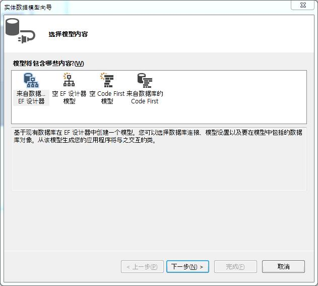

为了在Visual Studio服务器数据连接的数据源中支持MySQL类型，首先安装mysql-for-visualstudio驱动，下载地址为：https://dev.mysql.com/downloads/file/?id=469617
创建实体数据模型
- 在项目名上右键，添加新建项。
- 在添加新项对话框中，选择
数据——ADO.NET实体数据模型。 - 选择数据模型内容，下一步，在数据源中选择MySQL Database，点击继续。
 新建连接，输入要连接的数据库的信息。测试连接。下一步，选择映射对象。
如果出现DBNull的错误信息。是因为MySQL 5.7 没有很好的支持实体框架5或6。
可以通过关闭mysql优化器行为而解决。
1
2
3
4mysql> use test（要映射的数据库名）;
Database changed
mysql> set global optimizer_switch='derived_merge=OFF';
Query OK, 0 rows affected (0.00 sec)
此时再进行1～4操作，则成功建立实体数据模型。
[1]. 参考: https://dev.mysql.com/doc/refman/5.7/en/entering-queries.html
[2]. 参考: http://blog.csdn.net/liyuqian199695/article/details/53556639